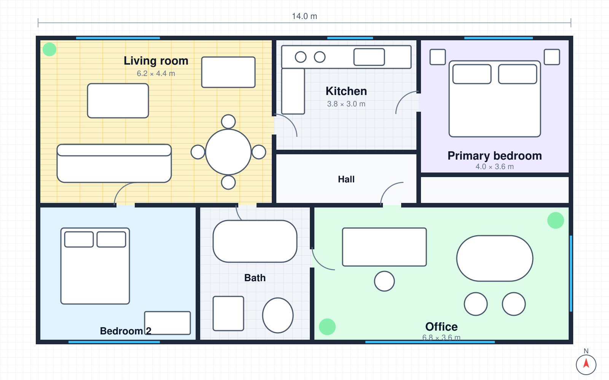

Gallery & Lightbox
<o-gallery> lays out images as a grid, masonry or justified rows and opens a full-screen lightbox with pinch / wheel / double-tap zoom, panning, rotation, slideshow, thumbnails, download, share and swipe-down-to-close. data-o-preview adds the same viewer to any image, and <o-zoom> is a standalone pan-and-zoom box.
Masonry gallery with lightbox
Children are plain links to the full image with a thumbnail inside. Width/height attributes give the layout the aspect ratio before images load. Click any image — then try the arrow keys, +/−, the mouse wheel, double-click, or a swipe down on touch screens.


Grid from data (with a video)
Set items from JavaScript (or as JSON) to render tiles yourself. Items with type: 'video' play inside the lightbox (with <o-video> when the players package is loaded, otherwise the native player).
Justified rows
Rows keep the images' aspect ratios and fill the full width; row-height sets the target height. Captions appear on hover (always on touch devices).
Lightbox API
Orion.lightbox(items, options) opens the viewer from code and returns a handle to control it. The viewer is a modal dialog: focus is trapped, the page does not scroll, Esc closes and focus returns to the trigger.
Image preview (data-o-preview)
Add data-o-preview to any image (or a link wrapping one) to open it in the lightbox. Images with the same value form a group you can browse. Use data-o-preview-src for a larger version and data-caption / data-title for text.
 A single image in running text opens by itself. It is focusable and opens with Enter or Space, so keyboard users get the same preview.
A single image in running text opens by itself. It is focusable and opens with Enter or Space, so keyboard users get the same preview.{kind=link}
{kind=link}
{kind=link}
{kind=link}
Zoom controls (<o-zoom>)
A pan-and-zoom box for any content — here an SVG floor plan with a minimap. Zoom with the toolbar, Ctrl/⌘ + wheel or trackpad pinch (a plain wheel keeps scrolling the page and shows a hint), touch pinch, or a double-click; drag to pan. The level button resets to fit and the last button goes fullscreen.

API
<o-gallery>
| Attribute / property | Type | Default | Description |
|---|---|---|---|
| layout | 'grid' | 'masonry' | 'justified' | grid | Tile layout. |
| columns | number | Fixed column count (grid, masonry). Empty = as many columns of min-width as fit. | |
| min-width | number | 200 | Minimum tile width in px for automatic columns. |
| gap | number | CSS length | 8 | Space between tiles. |
| aspect | string | 1 | Tile aspect ratio in grid layout, e.g. 4/3. |
| row-height | number | 220 | Target row height (justified). |
| captions | 'hover' | 'below' | 'none' | hover | Caption display (.o-gallery-cap or <figcaption>). |
| lightbox | boolean | true | Open the lightbox on click (lightbox="false" to disable). |
| lightbox-options | object | {} | Options passed to Orion.lightbox. |
| items | array | [] | [{ src, thumb, title, caption, alt, width, height, type, poster, tracks }] — rendered as tiles. |
| label | string | Accessible name. | |
| open(i) / relayout() / getItems() | methods | Open the viewer at a tile, recompute the layout, read items. | |
| o-open | event | { index, item } — cancelable; call preventDefault() to handle clicks yourself. |
Orion.lightbox(items, options)
| Option | Default | Description |
|---|---|---|
| index | 0 | Item to show first. |
| loop | true | Wrap around at the ends. |
| zoom / maxZoom / upscale | true / 4 / false | Zooming (buttons, wheel, pinch, double-tap); max zoom relative to fit (at least 2× the real pixels); allow small images to grow beyond 100%. |
| thumbnails | items > 1 | Thumbnail strip. |
| slideshow / interval | true / 4000 | Slideshow button and delay. |
| download / share / rotate / fullscreen / counter | true / false / true / true / true | Toolbar buttons (share uses the Web Share API or copies the link). |
| swipeClose | true | Swipe up or down to close. |
| origin | Element the viewer zooms out of (and returns focus to). | |
| label, onChange(index, item), onClose(reason) | Accessible name and callbacks. |
Returns { next(), prev(), goTo(i), close(), zoomIn(), zoomOut(), reset(), rotate(deg), play(), pause(), fullscreen(), index, item, zoom, el }. The dialog also dispatches o-change { index, item }, and o-lightbox-close is dispatched on the origin element.
data-o-preview
| Attribute | Description |
|---|---|
| data-o-preview="group" | On an <img> or a link. Elements with the same value are browsed together; an empty value previews one image. |
| data-o-preview-src | Full-size source (links use href). |
| data-title / data-caption | Caption text (defaults to the image alt). |
| data-width / data-height / data-type / data-poster | Real size of the full image, video items and their poster. |
| data-o-preview-options | JSON options for Orion.lightbox. |
<o-zoom>
| Attribute / member | Default | Description |
|---|---|---|
| min / max | 1 / 8 | Zoom range relative to “fit”. |
| step | 1.5 | Factor for the + / − buttons and keys. |
| wheel | ctrl | ctrl (Ctrl/⌘ + wheel, pinch), zoom (plain wheel) or none. |
| controls / minimap / fullscreen | true / false / true | Toolbar, overview map, fullscreen button. |
| src / alt | Convenience: render an image as the content. | |
| zoomIn() / zoomOut() / zoomTo(level) / reset() / panBy(dx, dy) | Methods. Getters: zoom (1 = fit), scale. | |
| o-change | Event { zoom, scale, x, y } on every change. | |
| --o-zoom-h | 24rem | Height (or set height directly). |
Keyboard
| Key | Lightbox | <o-zoom> (focused) |
|---|---|---|
| ← / → | Previous / next (mirrored in RTL); pan when zoomed | Pan |
| ↑ / ↓ | Pan when zoomed | Pan |
| + / − | Zoom in / out | Zoom in / out |
| 0 | Reset zoom | Fit |
| Home / End | First / last item | |
| R / Shift+R | Rotate clockwise / counter-clockwise | |
| F | Toggle fullscreen | |
| S | Start / stop slideshow | |
| Esc | Close |
Touch: swipe left/right to navigate, swipe down to close, pinch to zoom, double-tap to zoom in/out, tap to hide the toolbar. The viewer uses dark tokens in every theme so photos keep their contrast.
Frameworks
<o-gallery> never moves its children — render tiles with your framework, or pass items as a property. In React listen to o-open via a ref; Orion.lightbox() can be called from any event handler.